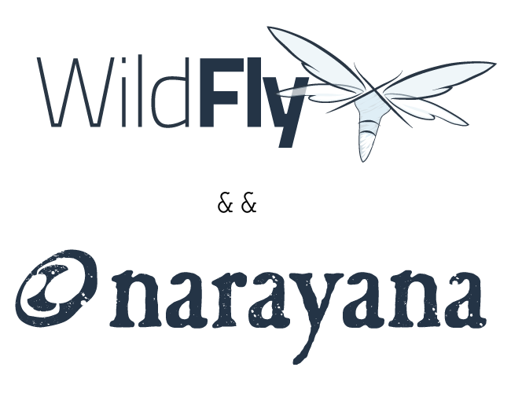
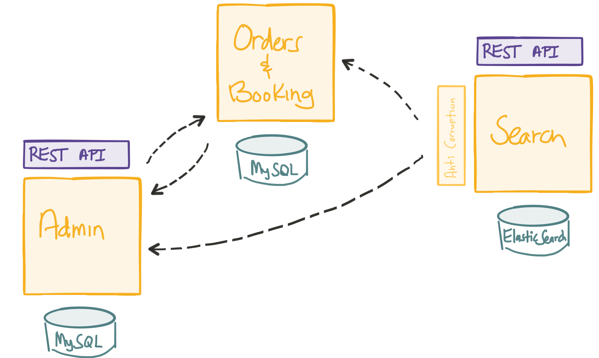
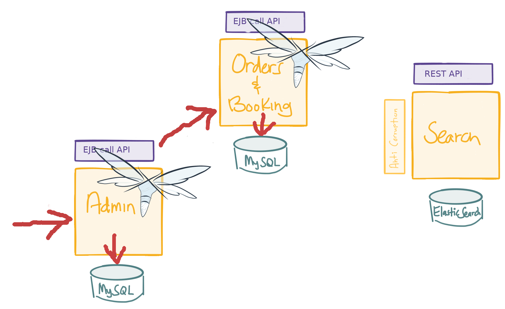
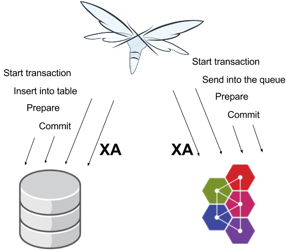
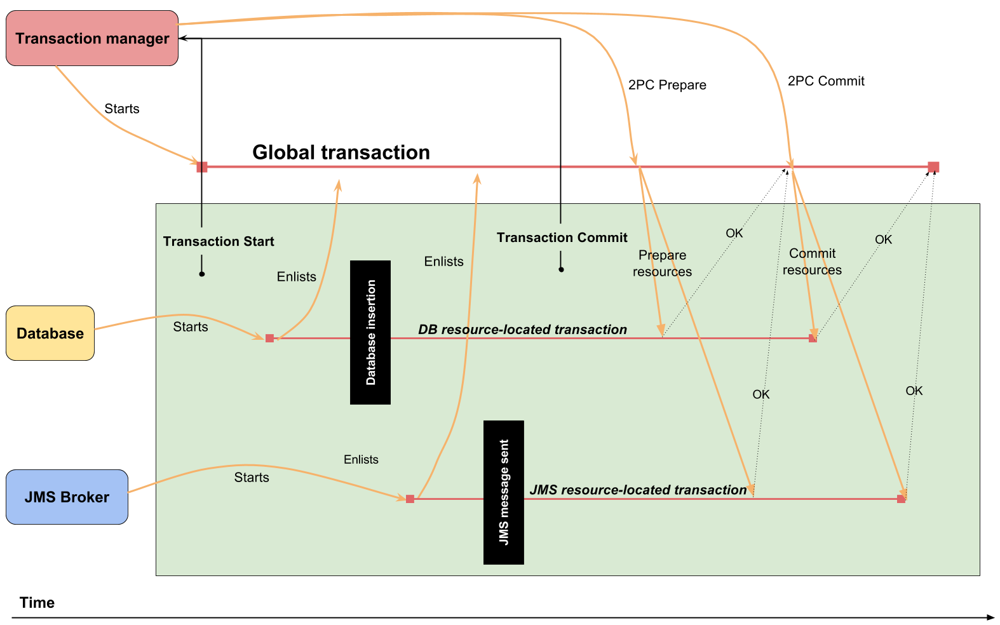
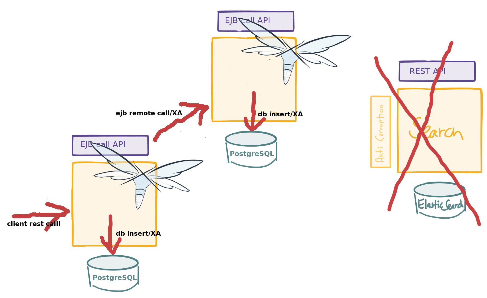
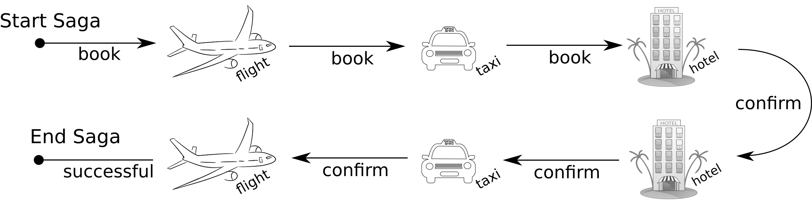
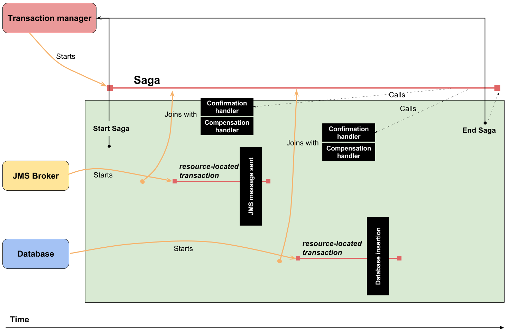
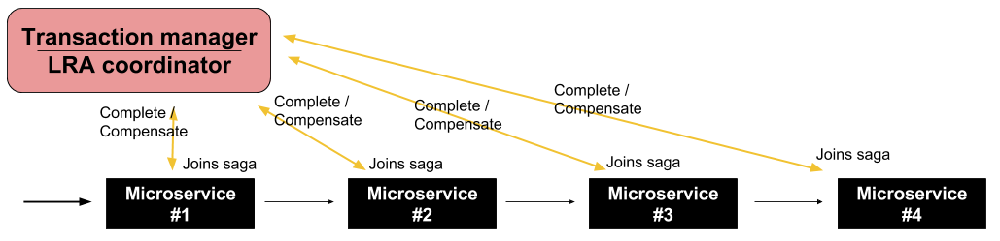
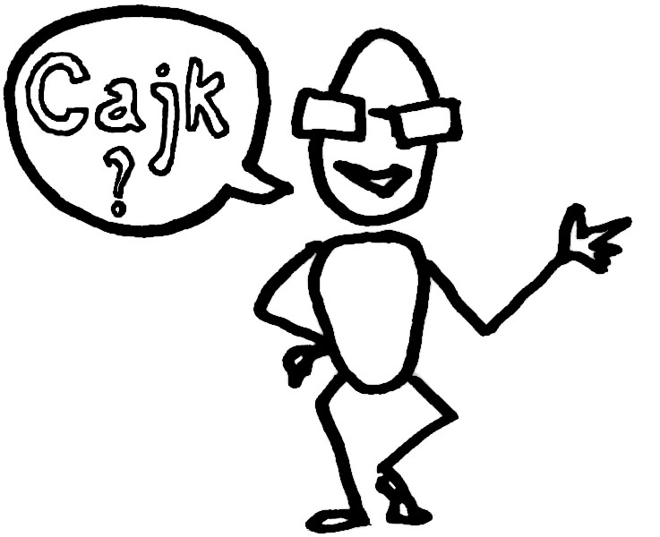

Ondra Chaloupka / ochaloup@redhat.com

earlier Arjuna, renamed to Narayana
JTA implementation in JBoss/WildFly
JTS distributed transaction over IIOP
webservice transactions (WS-AT/WS-BA)
STM for Vert.x
saga transactions over REST
What is meant under term microservice in scope of this presentation
How the the distributed transactions and 2PC works
What is saga and why could be good fit for microservice architecture
What are and how to use Narayana Long Running Actions

(credit: Christian Posta, http://blog.christianposta.com)

An atomic unit of the work where everything or nothing is finished
usually in regards of data manipulation
Protecting shared resources from multiple users
A notion of a global consensus
ACID properties guaranteed
Atomicity
Consistency
Isolation
Durability
distributed transaction runs over multiple services
XA transaction joins operations over multiple resources



closely coupled environment
harder to scale
tight data coupling
short duration
locking reduces parallelism
loosely coupling
scaling
long duration activities
Transactional model for long living transaction
Saga paper (H. Garcia-Molina, K. Salem; 1987)
Relaxing ACID properties
Eventual consistent
Web services: WS-BA specification, SOA design pattern
REST and event sourcing: microservices

consists of a sequence of autonomous operations, each immediatelly visible to outer world
responsibility of failures handling to developer (handlers)
transaction manager is responsible for calling handlers
compensation handler defined by developer, called by transaction manager

XTS: WS-BA (Web Services Business Activity)
Compensating transactions (CDI annotations)
LRA (Long Running Actions, over REST)
LRA: Long Running Actions
Saga implementation for REST calls
based on the Eclipse MicroProfile stack (JAX-RS, CDI)

Narayana LRA - implementation of Saga for REST calls
a better fit for MSA than ACID transactions
a tool that can help in desiging the application
MSA principles should be preserved
